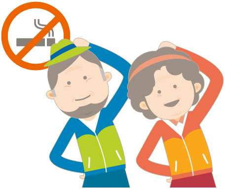
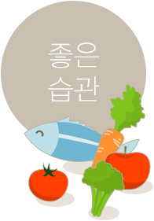
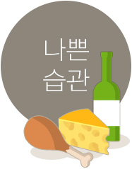

치매 예방
01.치매도 예방할 수 있나요?
치매는 건강한 생활을 통해 상당부분 예방이 가능합니다.
그러기 위해서 다음 사항을 잘 알고 실천해야 합니다.
치매 예방을 위한 10대 수칙
- 고혈압을 치료해야 합니다.
- 당뇨병을 조절해야 합니다.
- 콜레스테롤을 점검해야 합니다.
- 비만을 조절해야 합니다.
- 심장병을 초기에 발견하고 치료하십시오.
- 우울증을 치료해야 합니다.
- 적절한 운동을 꾸준히 하십시오.
- 절대로 담배를 피우지 마십시오.
- 과음은 절대 금물입니다.
- 적당한 일이나 취미활동을 계속 하십시오.

치매 예방에 도움이 되는 식생활 수칙
건강에 좋은 음식을 먹는 습관은 뇌의 노화와 기억력감퇴를 막아주어 치매예방에 도움을 줍니다.

- 칼로리 섭취량을 줄이고 체중을 감량하십시오.
- 저지방 식사를 하십시오.
- 비타민 E, 비타민 C, 엽산 및 종합비타민을 복용하십시오.
- 매일 과일, 채소, 차 등 항산화식품을 드십시오.
- 하루에 6잔 이상의 물을 충분히 마시십시오.
- 좋은 지방(오메가3 지방)이 많이 함유된 음식을 섭취하십시오.
- 등푸른 생선, 과일, 녹색 야채, 견과류, 올리브유 등

- 스트레스에 의한 과식을 피하십시오.
- 카페인 과다 섭취를 피하십시오.
- 가공식품 및 혈당지표가 높은 탄수화물을 피하십시오.
- 나쁜 지방(오메가6 지방)의 섭취를 피하십시오.
- 육류, 버터, 치즈, 마가린, 마요네즈, 야채기름(옥수수기름 등), 가공식품 등
출처 : 치매 부담없는 행복한 나라